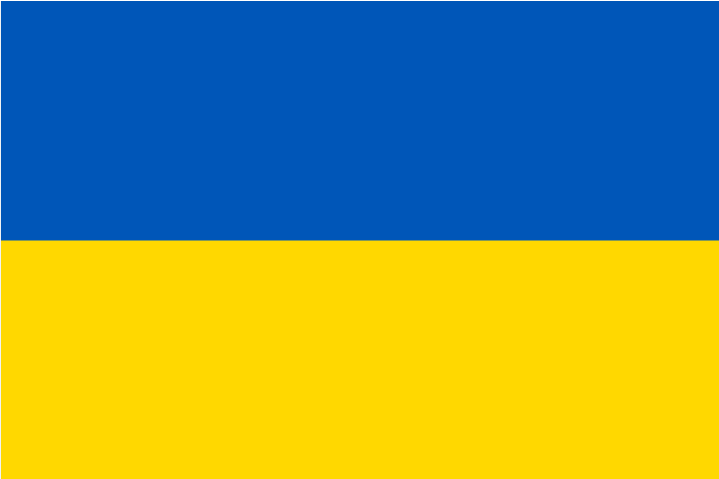

- Бажена  ⇒ читати походження
- Барбара ⇒ не відомо
- Белла ⇒ читати походження
- Берта ⇒ читати походження
- Богдан ⇒ читати походження
- Богдана ⇒ читати походження
- Богуслав ⇒ читати походження
- Богуслава ⇒ читати походження
- Божена ⇒ читати походження
- Болеслав ⇒ читати походження
- Болеслава ⇒ читати походження
- Борис ⇒ читати походження
- Борислав ⇒ читати походження
- Борислава ⇒ читати походження
- Броніслав ⇒ читати походження
- Броніслава ⇒ читати походження
- Будимир ⇒ читати походження
Б на верх